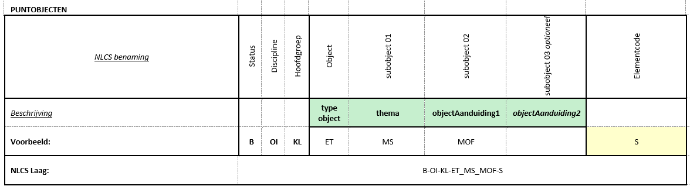

CAD-model Een model in een CAD-applicatie met daarin een weergave van ruimtelijke objecten
CAD-tekening Een printbare weergave van het CAD-model met een kader en een titelblok met informatie over de tekening
Status van dit document
Deze paragraaf
beschrijft de status van dit document ten tijde van publicatie. Het is
mogelijk dat er actuelere versies van dit document bestaan. Bekijk de
lijst van digiGO technische standaarden op
www.digigo.nu
en alle digiGO-publicaties via
www.digigo.nu.
Dit is een consultatieversie en is nog niet vastgesteld.
Een publicatie als in consultatie
impliceert geen onderschrijven door digiGO.
Belanghebbenden, geïnteresseerde partijen en anderen worden
uitgenodigd dit document te reviewen en hun commentaar in te zenden
vóór 1 februari 2025. Zowel inhoudelijk als
technisch commentaar als commentaar betreffende de
implementeerbaarheid is welkom.
GitHub Issues wordt gebruikt voor de discussie
van dit document. Eén issue per onderwerp vereenvoudigt de verwerking.
Reviewcommentaar mag ook achtergelaten worden als
Hypothes.is annotaties. Gebruik het publieke kanaal voor je
commentaar.
1. Conformiteit
Naast onderdelen die als niet normatief gemarkeerd zijn,
zijn ook alle diagrammen, voorbeelden, en noten in dit document niet
normatief. Verder is alles in dit document normatief.
Het sleutelwoord MOET in dit
document is hebben een normatieve betekenis zoals
beschreven in het Engels in
BCP 14
[RFC2119] [RFC8174]
indien in hoofdletters geschreven.
2. Doel standaard
Dit onderdeel is niet normatief.
2.1 Inleiding
Terwijl veel partijen in de bouw gaandeweg overstappen op het werken met BIM (Bouwwerk Informatie Modellen) en 3D modelleren, wordt er in de GWW-sector nog veel in 2D getekend. De verwachting is dat dit bij het plannen en realiseren van infrastructuur nog geruime tijd zo zal blijven. Ook wanneer het werken met een BIM gemeengoed zal zijn, zullen 2D tekeningen nodig blijven om bepaalde informatie over het project te representeren en uit te wisselen tussen de betrokken partijen.
2.2 Doel
NLCS zorgt voor meer eenheid in het tekenwerk. Opdrachtgevers in de openbare ruimte en infrastructuur besteden ontwerp- en tekenwerk vaak uit. Door opdrachtnemers gebruik te laten maken van NLCS ontstaat er meer eenheid in het tekenwerk, kunnen digitale tekeningen makkelijker worden uitgewisseld, hoeven tekeningen niet te worden hertekend, en zijn tekeningen 10 a 15 jaar na oplevering nog bruikbaar voor onderhoud en reconstructie. Ook voor opdrachtnemers is het handig dat alle opdrachtgevers dezelfde eisen stellen aan het tekenwerk en dat niet voor iedere opdrachtgever andere tekenafspraken gelden.
NLCS is een “open” standaard, dat wil zeggen: systeemonafhankelijk en vrij toegankelijk voor iedereen die er gebruik van wil maken. NLCS staat op de Pas Toe of Leg Uit lijst van Forum Standaardisatie als verplichte standaard voor Nederlandse overheden en instellingen in de (semi) publieke sector. Voor (overheids-)opdrachtgevers is in dit verband met name de verbeterde informatie-uitwisseling met opdrachtnemers van ontwerp- bouw- en onderhoudsprojecten van belang.
2.3 Use cases
Hieronder staat beschreven voor welke use cases NLCS geschikt is.
2.3.1 Bestaande situatie
NLCS is geschikt om de bestaande situatie op tekeningen weer te geven.
De tabel met vergelijking tussen NLCS en het PDOK Thema Stedelijk Water kan worden gebruikt als hulpmiddel om de bestaande gegevens over stedelijk water uit GIS om te zetten naar een CAD model.
De tabel met vergelijking tussen NLCS en de BGT kan worden gebruikt als hulpmiddel om de bestaande objecten op de kaart uit GIS om te zetten naar een CAD model.
Meer informatie over deze vergelijkingen staat in de Uitwisselafspraken.
2.3.2 Planvorming
In NLCS zitten de objecten die het mogelijk maken om vóór de ontwerpfase Planvormingstekeningen te maken, zoals verkavelings-, exploitatie-, maten- en inrichtingsplannen. Dit zijn plannen die gemeenten doorgaans maken voordat er sprake is projecten in de buitenruimte.
2.3.3 Ontwerp
NLCS is geschikt om ontwerp- en uitvoeringstekeningen te maken.
2.3.4 Revisie
NLCS is geschikt om na uitvoering de op te leveren situatie (revisie) weer te geven.
NLCS is nog niet geschikt om geautomatiseerd te herkennen welke objecten gemuteerd moeten worden in een beheersysteem. Hiervoor moeten extra afspraken gemaakt worden over het herkennen van bestaande, maar gemuteerde objecten in de tekening.
2.3.5 Aansluiting op BGT
Aan de ‘achterkant’ (na de oplevering van een bouwproject) is de mogelijkheid geschapen om een NLCS-model om te zetten naar bijvoorbeeld een GIS-bestand conform het IMGeo Protocol. Dit maakt het mogelijk om de nieuwe situatie na oplevering van een project in de buitenruimte direct in te voeren in de wettelijk verplichte BGT (Basiskaart Grootschalige Topografie). Hoe dit werkt staat in de Uitwisselafspraken.
2.4 Implementatie
Diverse leveranciers hebben hun 2D CAD-applicaties voor de GWW-sector aangepast voor de ondersteuning van NLCS. Gebruikers kunnen dook zelf hun CAD-applicatie inrichten met NLCS lagen en representaties.
2.5 Roadmap naar de toekomst
2.5.1 BIM
De NLCS wil stappen zetten van een ‘traditionele’ CAD standaard naar een BIM standaard.
De beheerorganisatie van NLCS wil deze ontwikkeling voortzetten en verankeren. De ambitie is om de NLCS te ontwikkelen naar een volwaardige ‘Level 2’ standaard volgens de Kenniskaart Nederlandse BIM Levels voor projecten in de buitenruimte.
Figuur 2 Groeipad NLCS standaard
2.5.2 DSGO
NLCs wil passen binnen het DSGO en sluit actief aan bij de ontwikkelingen die daarop plaatsvinden.
3. Werking NLCS
3.1 Scope
De NLCS bevat afspraken voor:
A. Metadata titelblok: de (minimale) set van gegevens en/of onderdelen die moeten worden opgenomen in het titelblok van een CAD-tekening; zie daarvoor Eisen aan tekeningen en modellen
B. Basis digitaal tekenen: afspraken met betrekking tot de wijze waarop digitaal wordt gemodelleerd, te hanteren eenheden, assenstelsels, peilen en tekenbladschalen; Eisen aan tekeningen en modellen
C. Uiterlijk van de CAD-tekening: afspraken met betrekking tot onder andere toegestane afmetingen van het tekenblad, kaders, tekststijlen, bematingsstijlen en lettertypen; Eisen aan tekeningen en modellen
D. Ordening/codering en representatie van objecten: afspraken met betrekking tot de wijze waarop informatie binnen een tekening in lagen wordt geordend in een CAD-model.
3.2 Technische Uitgangspunten
3.2.1 Objectgerichte laagnamen
Een belangrijk uitgangspunt voor NLCS is ‘objectgericht werken’ volgens de principes van BIM. Dat houdt in dat de objecten in de tekening herkenbaar moeten zijn voor alle gebruikers binnen de GWW sector. In de NLCS is dit opgelost door voor in principe ieder te onderscheiden object een afzonderlijke laag op te nemen met in de laagnaam informatie waarmee het objecttype gedefinieerd wordt.
3.2.2 2D CAD
Een tweede belangrijk uitgangspunt voor NLCS is, dat de standaard moet aansluiten op de gangbare CAD praktijk met de gangbare CAD applicaties. Die praktijk kenmerkt zich onder andere door een mechanisme van informatiescheiding door middel van een lagenstructuur. Informatiescheiding is noodzakelijk om hergebruik van de opgeslagen informatie mogelijk te maken, zonder gegevens opnieuw te moeten invoeren. Hergebruik van informatie betreft bijvoorbeeld het ‘automatisch’ bepalen van hoeveelheden uit een model, maar ook hergebruik van de CAD modellen bij latere onderhouds- en reconstructiewerkzaamheden.
3.2.3 3D CAD
Bij 3D modelleren en BIM wordt een fundamenteel ander mechanisme van informatiescheiding gehanteerd. In een 3D model/BIM wordt informatie (data) in een databasestructuur direct gekoppeld aan de objecten waarop zij betrekking heeft. Ook uit een 3D-model kunnen en moeten vervolgens 2D-tekeningen worden gegenereerd. Door de verschillende mechanismen van informatiescheiding is het niet altijd mogelijk die 2D-tekeningen te laten voldoen aan de NLCS. Wanneer (overheids-)opdrachtgevers niettemin eisen dat alle tekeningen van een project as built moeten worden geleverd conform NLCS, kan dat een barrière opwerpen voor het gebruik van 3D modelleren en BIM. Dat is een ongewenste situatie. Daarom is besloten dat de NLCS niet geldt voor 2D tekeningen die worden gegenereerd uit een 3D model [2] , mits de herbruikbaarheid van informatie in het kader van onderhoud en reconstructies op een andere wijze wordt gewaarborgd. Aanbevelingen hierover zijn opgenomen in de Uitwisselafspraken.
[2] Dit betreft met name 3D modellen van ‘Constructies’ (zie ook paragraaf 5.1.3). Voor civieltechnisch werk in de ‘Buitenruimte’ is het inmiddels goed mogelijk gebleken om op basis van 3D modellen 2D CAD tekeningen te genereren die volledig voldoen aan de NLCS.
3.3 Functionele werking
3.3.1 Harmonicamodel
NLCS geeft een harmonicamodel, waarbij eerst een heel generiek objecttype kan worden getekend, bijvoorbeeld een 'GESLOTENVERHARDING', en later (in een detailuitwerking van het ontwerp) kan worden gekozen om dit object op een andere laag te zetten waarbij een specifiekere keuze is gemaakt voor het type object, in het voorbeeld 'GESLOTENVERHARDING_ASFALT'. De ontwerper kan daarbij van grof naar fijn ontwerpen en steeds meer details uitwerken.
3.3.2 Statusmodel
De objecten in een tekening krijgen in de laagnaam een tekenstatus mee, die weergeeft wat de situatie van de objecten is na uitvoering van het werk waar de tekening voor gemaakt is.
Aan de status kan een numerieke waarde 01-99 worden toegevoegd om weer te geven dat het de situatie van het object betreft na een fase in het project. Een object kan zo gevolgd worden tijdens het werk, met onderscheid tussen tekeningen van de bestaande situatie, ontwerptekeningen en revisietekeningen.
Voor het automatisch terugleveren van mutaties voor het asset databeheer zijn de NLCS statussen niet toereikend. Daarom moeten voor dit doel extra afspraken worden gemaakt binnen en project.
3.3.3 Bewerking
In een laagnaam kan worden aangegeven welke bewerking het object moet ondergaan. Denk aan verplaatsen, reinigen en dergelijke.
3.3.4 Tekenvrijheid
NLCS biedt de vrijheid om objecten oppervlakkig aan te duiden, of met meer details en diepgang. Als naar gelang van het doel van de tekening.
NLCS biedt vrijheid om objecten een andere visuele presentatie te geven, vooral als dit de leesbaarheid van de tekening ten goede komt. Een afwijking is daarom niet altijd erg.
NLCS regelt niet wat er op specifieke tekeningen moet komen. Een schetsontwerp vraagt een heel ander detailniveau dan een uitvoeringsontwerp. Als u wilt, dat specifieke objecten op de tekening staan of u bepaalde details wilt zien, dan moet u hier zelf om vragen aan degene die de tekening voor u opstelt.
3.4 Eigen bibliotheken
De NLCS is niet compleet. U kunt daarom eigen aanvullende bibliotheken maken, met de uitgangspunten van NLCS. Hierdoor vallen uw tekeningen nog steeds beter over te nemen door andere partijen. We stellen het op prijs als u uw aanvullingen bij ons indient als het gaat om ontbrekende objecten, zodat deze beschikbaar komen voor de gehele sector.
3.4.1 Eigen objecten
NLCS bevat een basisset laagnemen om objecten te tekenen. Gebruikers, softwareontwikkelaars of toeleveranciers kunnen desgewenst eigen objecten(-bibliotheken) toevoegen.
3.4.2 Eigen symbolen
NLCS bevat een basisset symbolen. Gebruikers, softwareontwikkelaars of toeleveranciers kunnen desgewenst eigen symbolen(-bibliotheken) toevoegen.
3.4.3 Eigen arceringen
NLCS bevat een basisset arceringen. Gebruikers, softwareontwikkelaars of toeleveranciers kunnen desgewenst eigen arceringen(-bibliotheken) toevoegen.
4. Toepassing NLCS
4.1 Controleren van tekeningen
Om te controleren of een tekening voldoet aan NLCS, hebben NLCS-leveranciers tooling beschikbaar. Die controleert op het gebruik van de juiste laagnamen, kleuren, lijnstijlen, lijndiktes, arceringen en symbolen. En geeft waarschuwingen als er afwijkingen of aanvullingen op de standaard zijn ontstaan. Als een opdrachtnemer een tekening conform NLCS aanlevert, kun u daarbij vragen om deze controle. Dan kunt u zien in hoeverre en voldaan wordt aan de standaard.
4.2 Voorbeeldtekeningen
De NLCS is een tekenstandaard die met name de (digitale) opbouw van de getekende objecten voorschrijft. Met het voorschrijven van de NLCS is het dan ook nog steeds mogelijk om een eigen “look and feel” aan de tekening te geven.
Ter illustratie van de mogelijkheden hebben we de gemeente Amsterdam, Rotterdam en Movares bereid gevonden om hun voorbeeldtekeningen te publiceren. Deze zijn inhoudelijk niet door ons gecontroleerd. Aan de inhoud en eventuele afwijkingen van de NLCS kunnen dan ook geen rechten ontleend worden.
Daarnaast vindt u in het overzicht hieronder ook de RAW bestekteksten die gebruikt worden voor het aanleveren van Riool revisietekeningen, zoals Rotterdam ze in projecten toepast. Heeft u zelf ook voorbeeldtekeningen die u wilt delen? Voeg deze toe via een issue, dan publiceren wij ze.
Een beperkt aantal OBJECTEN komt voor in twee HOOFDGROEPEN. Zo komt een DRIP (Digital Road Information Panel) voor in zowel KABELS EN LEIDINGEN als in INSTALLATIES WEG. Het gaat hierbij om plaatsing van hetzelfde OBJECT in verschillende modellen die doorgaans door verschillende tekenaars voor verschillende gebruiksdoelen worden gemaakt (respectievelijk voor het ontwerpen/uitvoeren van de installatietechniek en voor het ontwerpen/uitvoeren van verkeerskundige maatregelen). Andere voorbeelden zijn VDI en TDI. Of een lichtmast, die voorkomt in zowel de HOOFDGROEP INRICHTINGSELEMENTEN (waar over de plaatsing van de lichtmast moet worden beslist in relatie tot alle andere inrichtingselementen) als in de HOOFDGROEP OPENBARE VERLICHTING (waar de lichtmast een onderdeel is van het openbare verlichtingssysteem). Ook hier gaat het dus om hetzelfde OBJECT, bezien vanuit twee verschillende invalshoeken .
5.2 IE Inrichtringselementen
De hoofdgroep inrichtingselementen is een vergaarbak van allerlei objecten die in de openbare ruimte voorkomen: prullenbakken en bankjes, maar ook putdeksels, boomroosters en lpg vulpunten.
Deze hoofdgroep bestaat vooral, om in tekeningen ten behoeve van een specialisme zoals verhardingen of rioleringen, ook de "in de weg staande objecten" te kunnen weergeven en in een keer uit of aan te kunnen zetten tijdens het tekenen.
Daarnaast wordt de hoofdgroep inrichtingselementen gebruikt om objecten uit de BGT in een CAD tekening te plaatsen. Het betreft dan deze objecten in een zeer abstracte, eenvoudige weergave zoals op een kaart. De specialistische uitwerking naar types staat in andere hoofdgroepen; bijvoorbeeld er komt één put voor in inrichtingselementen, voor de BGT. De typen rioolputten zoals een ontwerper en beheerder nodig heeft staan in de hoofdgroep rioleringen.
5.3 KL Kabels en leidingen
5.3.1 Laagnaam netwerklijnen
De kabels en leidingen krijgen altijd een laagnaam met de volgende onderdelen op een vaste volgorde gesorteerd:
Als OBJECT wordt het type net genoemd (gas, energie, enzovoorts)
Als EERSTE SUBOBJECT wordt het thema benoemd: hoogspanning, laagspanning enzovoorts, afgekort tot HS, LS.
Als TWEEDE SUBOBJECT wordt gebruikt voor de aanduiding van het type leveringsnetwerk. Hierbij wordt gebruik gemaakt van de terminologie TRANSPORT, DISTRIBUTIE en AANSLUITNET en is voor de verschillende NLCS netbeheer thema’s gelijk. Mogelijke waarden die kunnen voorkomen:
TRANSPORT = Hoofdnet
DISTRIBUTIE = Distributie netwerk
AANSLUITNET = Aansluiting/aansluitnetwerk
Volgende SUBOBJECT komt het voltage indien bekend
Als volgende SUBOBJECT komt kabel diamter gecombineerd met materiaal indien bekend
Als laatste kan indien de informatie uit KLIK wordt gehaald, de netbeheerder komen in de laagnaam. In de NLCS komen geen objecten voor met een netbeheerder, dit zou een individuele uitbreiding zijn.
De volgorde is daarmee voorspelbaar. Door altijd deze indeling en volgorde te kiezen wordt het eenvoudiger om een match te maken tussen attributen van een object in een informatiemodel, en de laagnaam van de geometrische representatie van het object. Het is niet de bedoeling om "lege velden" in de laagnaam te hebben, het gaat puur om de volgorde waarin de informatie in de laagnaam komt.
NB Voor riolering werkt het anders; omdat riolering een eigen hoofdgroep heeft geldt dat het type net niet hoeft te worden genoemd, het subtype zit onder HOOFDOBJECT1 en heeft ook andere namen, gebaseerd op GWSW.
Figuur 3 Standaard laagnaamindeling voor lijnobjecten in het netwerk
5.4 Laagnaam overige objecten
De overige objecten krijgen ook altijd eerste de aanduiding van type net en thema, dan de naam van het objecttype en eventuele subtypes, dan materiaal, dan diameter.

Figuur 4 Standaard laagnaamindeling voor knopen in het netwerk
Figuur 5 Standaard laagnaamindeling voor mantelbuizen in het netwerk
5.4.1 Speciale tekens netbeheer
Het gebruik van “-” en “_” is niet toegestaan in benamingen van zowel NLCS Objectnamen als in het deel “SYMBOOLNAAM”. Dit geldt altijd, maar verdient een extra vermelding bij NLCS netbeheer. Een voorbeeld hiervan is een T-stuk dat in de vaktermen ook daadwerkelijk op deze manier wordt toegepast. In plaats daarvan wordt gekozen om deze termen aan elkaar te vervoegen dus “TSTUK”.
Voor NLCS netbeheer zijn de tekens / of \, komma's en kleine letters in namen zoals bijvoorbeeld een kabelaanduiding “4 x 6/4 x 2,5Cu” gebruikelijk. Omdat dit technisch niet goed gaat in CAD-systemen wordt voorgesteld om dit als volgt op te lossen:
kabelaanduiding: 4x6:4x2.5Cu
5.5 VV Verkeerskunde Vaarwegen
Er zijn diverse afmetingen voor de borden afhankelijk van de breedte vaarweg.
De getekende borden hebben de afmeting voor vaarweg breedte 20-60m (x10)
De borden worden met een factor 10 groter gemaakt zodat het symbool op schaal 1:1000 leesbaar is.
De vorm en naam van de borden is gebaseerd op de Richtlijn scheepvaarttekens 2008.
Enkel symbolen hebben een extra toevoeging doordat deze in de RST voor enkele borden een andere afbeelding gebruiken met hetzelfde nummer.
Lettertype voor de borden: NLCS-RVV
KLEUREN
NEN3381
rood
RAL3020
wit
RAL9016
blauw
RAL5017
grijs
RAL7042 of RAL7043
zwart
RAL9005 of RAL9017
geel
RAL1023 (verkeersgeel)
groen
RAL6024
oranje
RAL2009
5.5.1 VW Verkeerskunde Wegen
In principe heeft een objecttype een eigen laag binnen NLCS. Bij de verkeersboirden niet, deze staan op één laag per categorie bord. De snelheidsborden staan bijvoorbeeld op één laag. Dit leidt ertoe dat in het geval van snelheidsborden niet het objecttype te onderscheiden valt qua verschillende soorten borden. Deze keuze is gemaakt voor het gemak van tekenen: via de laag snel naar het juiste verkeersbord, in plaats van een reuzehoeveelheid borden doorzoeken. Ook omdat voor elke snelheid een ander symbool bestaat. Daarnaast geldt dat een verkeerskundige bij het gebruiken van het model een selectie zal willen maken per verkeersmaatregel, en dus alle snelheidsborden in samenhang wil beschouwen. De verschillende borden afzonderlijk van elkaar aan- en uit zetten is niet nodig.
6. Releases
6.1 Release 5.1
6.1.1 Verbeteren en toevoegen objecten en representaties
NLCS 5.1 is een grootschalige verbeting van foutjes en ommissies in de documentatie en de publicatie van laagnamen, in kleuren, lijnstijlen, lijnweights en symbolen in ce huidige hoofdgroepen. Dit leidt tot vermindering van irritaties bij het tekenen volgens de standaard. Het gaat om een groot aantal wijzigingen. Men kan teruglezen welke wijzigingen zijn doorgevoerd door de issues met milestone 5.1 te selecteren in GitHub.
Er zijn voor sommige Elementen gewijzigde regels over de visuele presentie, alle regels zijn samengevat in het overzicht representatie. De wijzigingen betreffen de elementen: GD; S en SV.
6.1.2 Wijzigingen in techniek en interoperabiliteit
Voor aanpijlingen en maatvoeringen is een nieuwe werkwijze bedacht, dit om te zorgen dat men onderdelen die kunnen leiden tot problemen met interoperabiliteit bij uitwisseling tussen CAD-paketten beter kan traceren. Aanpijlingen en maatvoeringen komen voortaan in de laagnaam voor als L** respectievelijk M**, waarbij ** de aanduiding van de teksthoogte is. De representatie van de L**/M** lagen wordenwordt in de hoofdgroep ZZ gepubliceerd op dezelfde wijze als teksten T**.
De verschaling van symbolen inclusief de werking in alle soorten CAD pakketten is onderzocht. De toevoeging SO heeft geen betekenis meer. In plaats daarvan kunnen symbolen in de database een toevoeging .... krijgen. De symboolnamen zijn niet aangepast, daarin valt de toevoeging SO nog steeds te vinden.
De aanduiding G/A/S in de objectentabellen is verwijderd. Indien symbolen of arceringen beschikbaar zijn, hebben deze een relatie met de NLCS-Objecten.
De lijndikte-nummers uit Microstation staan niet meer in een conversietabel in de documentatie, maar worden gepubliceerd in de database als attribuut 'MicrostationNummer' van een Lijnweight.
Er zijn aanpassingen in de naamgeving van multileaderstijlen, waarbij altijd aangeduid wordt of een Aanhaallijn van toepassing is en of een backgroundmask van toepassing is, dit om te zorgen dat men onderdelen die kunnen leiden tot problemen met interoperabiliteit bij uitwisseling tussen CAD-paketten beter kan traceren.
In de eisen aan controle-tooling is opgenomen: indien de laagnaam de tekst HULPLIJN bevat, dient de controletool géén melding te geven dat dit een aanvulling op NLCS betreft. Dit voorkomt onnodige meldingen in het validatierapport.
De aanduiding SO heeft geen betekenis meer, in plaats daarvan wordt onderscheid gemaakt tussen aanduidingen WG (ware grootte) voor arceringen en symbolen en FS (vaste schaal/fixed size) voor symbolen.
Een arcering met aanduiding WG MOET een vaste nameetbare grootte krijgen volgens de plotschaal, deze arceringen moeten altijd op ware grote worden getekend.
6.1.3 Stedelijk Spoor
IN NLCS 5.1 is een toevoeging gedaan met spoorse infra in stedelijke omgeving met name gericht op tram. De lagen voor metro/lightrail zullen in volgende releases van de standaard worden toegevoegd. De objecten zijn onderverdeeld in 4 hoofdgroepen Spoorbouw (SB), Energievoorziening Spoor (ES)=Nieuw, Installatie Spoor (IS) (=wisselaansturing en -verwarming), Verkeersmaatregelen Spoorweg (VS) (=seinen, etc).
Tevens is gekeken waar objecten eventueel in bestaande hoofdgroepen passen en zijn daar geplaatst. Men kan teruglezen welke wijzigingen zijn doorgevoerd door de issues met milestone 5.3 te selecteren in GitHub.
6.1.4 Netbeheer, objecttoestanden
IN NLCS 5.1 is een toevoeging gedaan met objecten voor de hoofdnetten voor electriciteit. Daartoe is de technische werking en publicatie van NLCS uitgebreid met een objecttoestand, in het geval van netten met de toestanden in gebruik (default), in reserve en verlaten. Objecten krijgen voor elke combinatie van objecttoestand en tekenstatus eigen kleuren, lijndiktes en lijnstijlen toegekend.
Men kan teruglezen welke wijzigingen zijn doorgevoerd door de issues met milestone 5.4 te selecteren in GitHub.
6.1.5 Verkeersborden
IN NLCS 5.1 is een toevoeging gedaan met objecten en symbolen voor verkeersborden. Men kan teruglezen welke wijzigingen zijn doorgevoerd door de issues met milestone 5.6 te selecteren in GitHub.
6.2 Release 5.01 LinkedData
De enige wijziging in deze release is de overstap van het publicatieplatform van NLCS van sql naar linked data. De inhoud van NLCS is met deze release ongewijzigd.
6.2.1 Versiebeheer
Waar in de sql database versiebeheer en wijzigingen gelogd werden door de status "vervallen", "nieuw" en "gewijzigd" mee te geven aan objecten, en een opmerkingenveld in te vullen met de reden van de wijziging, wordt dit in de linked data release niet meer expliciet gedaan. De gemaakte wijzigingen worden voortaan op GitHub opgenomen door issues te koppelen aan de Milestone die bij de release hoort.
Om verschillen tussen versies in de publicatie op te vragen, moet vanaf nu met sparql-queries worden gewerkt. Daarmee kunnen verschillen tussen releases onderzocht worden.
6.2.2 Niet-ingevulde velden
Bij de NLCS objecten werd in sql een waarde van -1 ingevuld bij de lijnkleuren en lijntypes en een 0 bij lijnweights als er geen waarde is. Met linked data is er simpelweg geen relatie. Daarom zijn ook de volgende regels uit de sql database niet overgenomen:
Lijntype IDs -2 en -1
Lijnkleur ID -1
Lijnweight ID -1
6.3 Release 5.0
In release 5.0 is de mapping met de BGT herzien en opgenomen in de database, zodat het importeren van BGT datasets een uniform resultaat opleveren. Hiervoor zijn onder andere ook lagen, symbolen, arceringen en lijntypen toegevoegd in de desbetreffende hoofdgroepen zodat de mapping van de BGT op NLCS gerealiseerd kon worden. Om deze mapping mogelijk te maken is zijn tevens de hoofdgroep IE en de bijbehorende symbolenbibliotheek op elkaar afgestemd. Dit heeft tot gevolg dat onderandere de bibliotheek voor borden, kasten, masten, palen, putten en sensoren zijn aangepast, daarnaast zijn ook generieke BGT symbolen opgenomen in de NLCS.
Naast de mapping met de BGT is ook een mapping tussen het GWSW (GegevensWoordenboek Stedelijk Water) en NLCS opgenomen in release 5.0. Vanuit Stichting Rioned wordt het thema Stedelijk Water op PDOK ontsloten. Eind 2021 zijn reeds 151 gemeenten en 6 waterschappen aangesloten op het GWSW.
Om deze mapping mogelijk te maken is tevens de hoofdgroep riolering afgestemd op het GWSW. Dit heeft op hoofdlijnen de volgende wijzingen tot gevolg:
AWZI wordt RWZI
VWA wordt DWA
SWA (Schoon Water Afvoer) vervallen
Onderscheid tussen rioolleiding en transportleiding (geen aansluitingen)
Duikers toegevoegd
Daarnaast zijn kleine onvolkomenheden in release 5.0 verholpen. Dit heeft geresulteerd in een kwaliteitslag met betrekking tot de bibliotheken (arceringen, lijstijlen en symbolen). Hierbij is gecontroleerd op opbouw van de bronbestanden in de bibliotheek, volledigheid en juistheid van de toegepaste schaal. Om in de toekomst het versiebeheer van deze bibliotheken in goede banen te leiden is de database uitgebreid met definities van arceringen en lijnstijlen. Daarbij is het ook mogelijk om vanuit de database de bibliotheken te genereren zodat vanuit de bron de bestanden gegenereerd kunnen worden.
Naast de aanpassingen op de database en de bibliotheken is ook de Formele Beschrijving op een aantal vlakken aangepast. Op hoofdlijnen zijn de volgende wijzigingen doorgevoerd:
RD Stelsel 28992 gebruiken, let op sinds Autodesk release 2022 is een foute definitie van het EPSG: 28992 opgelost. Oudere versies van de software gebruiken tot op heden nog de foutieve definitie;
Aanpassingen hoofdgroepen in afstemming met de database. Daarnaast zijn ook de hoofdgroepen tbv beoogde uitbreiding Stedelijk Spoor (Installaties spoor, verkeerskunde spoor en Spoorbaan) meegenomen;
Uitgangspunt voor symbolen, lijnstijlen en arceringen standaard definities, indien afwijkend worden aanvullende definities voor de statussen B en V toegepast;
Naamgeving lijnstijlen aangepast in lijn met de andere bibliotheken;
Er zijn lijnstijlen met varianten opgenomen om zo bijvoorbeeld het onderscheid te kunnen maken tussen verschillende trottoirbanden in een tekening. Aangezien we nooit volledig kunnen zijn in lijn met catalogi van producenten en/of leveranciers hebben we gekozen voor het ondersteunen van varianten. Zo kan op de tekening altijd duidelijk onderscheid gemaakt worden tussen de verschillende objecten, zonder dat de afstemming met de NLCS noodzakelijk is. Zie bijlage 4 voor een overzicht van de voorkomende lijnstijl varianten.
Eisen voor het opzetten van uitbreidingen van de standaard NLCS bibliotheken opgenomen;
6.4 release 4.2
Ten opzichte van release 4.1 zijn geen functionaliteiten toegevoegd. Wel zijn er foutjes in de database hersteld en zijn er verbeteringen doorgevoerd:
doublures (objecten die twee keer in de database stonden) zijn verwijderd;
een aantal symbolen is schaalbaar gemaakt;
ontbrekende symbolen zijn toegevoegd en andere symbolen zijn aangepast.
6.5 Release 4.1
Belangrijkste aanpassing in release 4.1 is, dat in diverse Hoofdgroepen in totaal enkele tientallen lagen, symbolen, arceringen en lijntypen zijn toegevoegd, die een nóg betere aansluiting mogelijk maken van de NLCS op IMGeo/BGT. Basis voor deze aanvulling is een grondige analyse die de gemeente Amsterdam heeft gemaakt ten behoeve van de mapping van de NCLS aan de BGT. De Projectgroep NLCS bedankt
Amsterdam voor de waardevolle input!
Kleinere aanvullingen en wijzigingen zijn:
toevoeging van een STATUS ‘R’ (Revisie);
toevoeging van de Discipline ‘METEN’, voor bijvoorbeeld het verwerken van inmeet gegevens.
schrappen van de term ‘TOPOLOGIE’ in een groot deel van de laagnamen in de Hoofdgroep ONDERGROND;
aanvullingen en wijzigingen in de benamingen van maatvoering- en tekststijlen.
Daarnaast zijn kleine onvolkomenheden in release 4.0 verholpen.
6.6 Release 4.0
Op 1 november 2014 is release 4.0 van NLCS verschenen. Twee belangrijke toevoegingen rechtvaardigen deze release:
de standaard is uitgebreid met ca. 400 lagen voor de Discipline PLANVORMING;
er is een koppeling gemaakt tussen de NLCS en de IMGEO-standaard, waardoor het mogelijk is geworden om een NLCS-tekening om te zetten naar een tekening conform de BGT (Basiskaart Grootschalige Topografie).
6.6.1 Planvorming
De NLCS is in eerste instantie ontwikkeld voor de ondersteuning van ontwerp en engineering van civiele projecten. Maar voordat er sprake is van een project, produceren onder andere gemeenten al veel tekenwerk. Zij maken bijvoorbeeld exploitatieplannen, verkavelingsplannen, matenplannen en inrichtingsplannen, veelal als nadere uitwerkingen of invullingen van bestemmingsplannen. Tot dusver werd dit type tekenwerk niet door NLCS ondersteund. Een belangrijke oorzaak daarvan is dat planvormingstekeningen doorgaans ‘vlakkentekeningen’ zijn, terwijl ontwerp- en engineeringstekeningen vooral worden opgebouwd als ‘lijnentekeningen’. Daarnaast worden in de planvormingsfase dikwijls andere objecten getekend dan in de ontwerp- en engineeringsfase van projecten. De NLCS voorzag daar nog niet in. De NLCS Werkgroep Planvorming, bestaande uit onder anderen vertegenwoordigers van de gemeenten Rotterdam, Hoorn, Zuidplas en Breda, heeft de standaard voor release 4.0 daarom uitgebreid met ruim 400 nieuwe lagen, die het maken van de genoemde planvormingstekeningen ondersteunen. De lagen zijn zodanig ingericht, dat er vlakkentekeningen mee kunnen worden gemaakt. Aanvullend kunnen planvormers gebruik maken van reeds bestaande lagen, symbolen en arceringen van de NLCS.
Zeer veel van de toegevoegde objecten/lagen zijn verwant aan objecten/lagen die al in diverse Hoofdgroepen van NLCS waren opgenomen. Mede om doublures te voorkomen (objecten die op verschillende plaatsen voorkomen in de NLCS) zijn de nieuwe ‘planvormingslagen’ niet ondergebracht in een aparte Hoofdgroep, maar zijn ze ingepast in de reeds bestaande Hoofdgroepen. Met name de Hoofdgroep ONDERGRONDEN (OG) is hierdoor flink uitgebreid. Maar ook in diverse andere Hoofdgroepen zijn ‘planvormingslagen’ toegevoegd. Bijlage 2 van deze Formele Beschrijving NLCS biedt een overzicht van de lagen uit de diverse Hoofdgroepen die kunnen worden gebruikt binnen de Discipline PLANVORMING.
6.6.2 NLCS-IMGEO
Nadat een project in de buitenruimte is afgerond, moet de gerealiseerde, nieuwe situatie worden verwerkt in de Basiskaart Grootschalige Topografie (BGT) volgens het IMGEO protocol. Dit is een wettelijke verplichting. De gebruikelijke werkwijze hiervoor is dat landmeters de nieuwe situatie ‘in het veld’ opmeten en de meetresultaten worden gedocumenteerd in een GIS-formaat dat geschikt is voor de BGT. In release 4.0 is in overleg met Geonovum (ontwikkelaar en beheerder van de IMGeo standaard) een aantal voorzieningen ingebouwd die het mogelijk maken om een NLCS-tekening as built automatisch om te zetten naar een volgens IMGeo/BGT opgebouwde objectenkaart. In bijlage 3 van deze Formele Beschrijving NLCS is beschreven hoe dit in zijn werk gaat en hoe een NLCS-tekening hierop moet worden voorbereid.
Met deze toevoegingen in release 4.0 zijn de toepassingsmogelijkheden van de NLCS in de levenscyclus van civiele objecten fors uitgebreid, zoals is gevisualiseerd in de onderstaande figuur.
De NLCS is primair ontwikkeld voor het ontwerp, de engineering en de realisatie van civiele projecten tot en met het vervaardigen van as built tekeningen. In release 4.0 is daar aan de voorkant de ondersteuning van de Planvorming aan toegevoegd. Aan de achterkant is ondersteuning van de registratie van de as built situatie conform IMGEO/BGT toegevoegd. Hiermee is de NLCS tevens op verschillende detailniveaus toepasbaar voor ondersteuning van het beheer van objecten in de buitenruimte. Daarmee is de cirkel gesloten.
Figuur 6 Toepasbaarheid van NLCS in de levenscyclus van objecten in de buitenruimte
7. Licenties
7.1 NLCS ontologie
Alle data in de ontologie van NLCS worden uitgegeven onder de CC0 licentie.
7.2 NLCS bestanden
De bestanden die gebruikt kunnen worden bij het implementeren in software zoals de laagtabellen en de bestanden met symbolen, arceringen en lijntypes worden uitgegeven onder de CC0 licentie.
7.3 NLCS Documentatie
De documentatie in ReSpec wordt uitgegeven onder de CC BY 4.0 licentie.
7.4 NLCS Query's
De (voorbeeld) query's worden uitgegeven onder de MIT licentie.